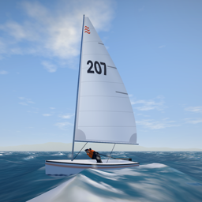

Tiller & SheetSupport
Questions or a bug? Write to braznichenko@gmail.com.
How do I steer?
Drag the tiller pad under your right thumb: right to turn right. In Settings, Real tiller makes it work like a dinghy's: push the tiller away from the way you want to go. Let go and it centres (you can turn that off too).
How do I trim the sail?
Drag the sheet handle under your left thumb down to pull the sail in, up to let it out. The green band shows the best trim for where you are pointing. Shaking sail: sheet in. Slow and not shaking: you have stalled it, ease a little. Tap Auto to let it trim itself.
Why do I keep heeling over and turning into the wind?
You are overpowered: the sail is pulling harder than your sailor can hold by hiking. Ease the sheet through the puff and pull it back in after it.
Why did I capsize?
Most likely a gybe with the sheet let right out in a breeze: the boom slams across. Pull the sheet in before you turn the stern through the wind. You are back up and sailing after a few seconds.
I can't race people online.
Online races use Game Center. Sign in under Settings › Game Center on your device, then open the Lobby tab on the first screen. Ask for a race and it starts two minutes later with everyone who comes to the start line; or join a race someone else has asked for. Everything else works without Game Center.
What is the regatta?
One online race every two hours, on the even hour (UTC), the same moment everywhere. Enter it ahead in the Lobby and you get a reminder two minutes before, or come to the line in the last five minutes. It scores double season points when two or more people sail it; alone, you race the computer fleet on the same course.
Lobby chat rules
Be a good sport: no bullying, hate, threats, swearing or sexual talk. There is zero tolerance for it. Keep personal details to yourself: no phone numbers, addresses, emails, links or other apps. Every message is filtered before it is posted. Tap … on a message to report it (it is hidden for everyone at once and we review it) or to block the player. Players who break the rules lose the chat. To report anything else about another player, email braznichenko@gmail.com.
Too many notifications?
Settings › Race people sets how often race alerts may come: at most one every 10 minutes to 4 hours (30 minutes to start with). None come at night or while you are in the app. Turn race alerts off there to stop them.
My score isn't on the leaderboard.
Leaderboards are on Game Center too. Your bests are kept on the device and posted whenever you sail signed in.